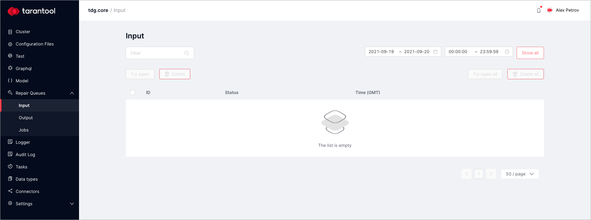
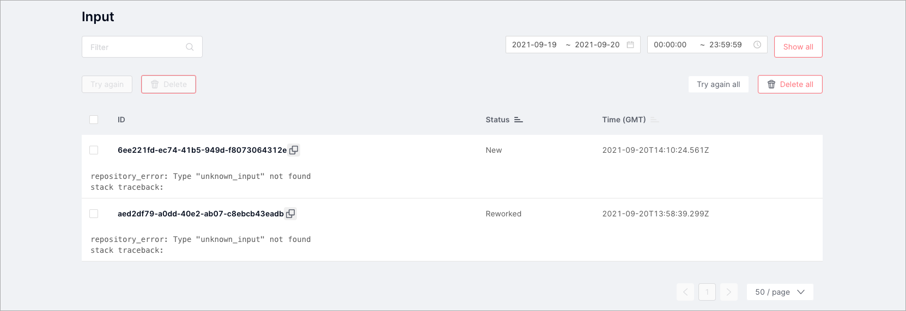
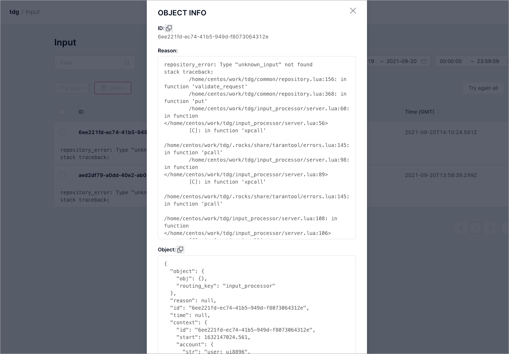
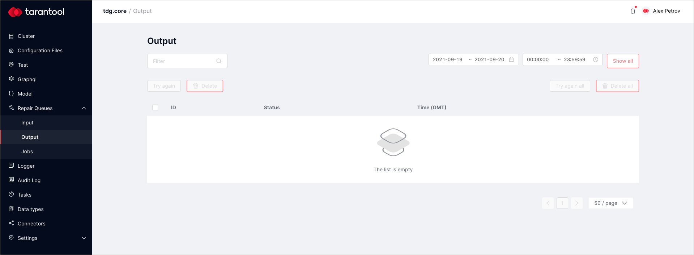
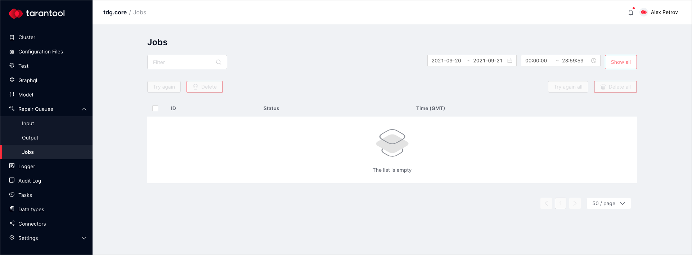

Repair queue¶
If TDG cannot process an incoming object, the system puts the object in the repair queue. The administrator then checks it, fixes the problem, and sends the object to be processed again.
Input¶
On the Repair queues > Input tab, there is a repair queue for submitted objects.
Here you can find the incoming objects that TDG could not process. Here are the main reasons why objects end up in the repair queue:
- Error when processing an incoming object with a handler.
- The TDG system expects an object in a particular format, but the incoming object from an external system was submitted in a different format.
- Internal system error.
- Hardware failure.
You can work with objects in the repair queue through the web interface on the Input tab:
On this tab, you can see the list of objects, their status (“New”, “In Progress”, “Reworked”), and the date and time when they were placed in the repair queue.
The Repair queue interface lets you do the following:
- Filter: filter the objects by any combination of characters in any table column or by specifying the date or time range.
- Try again: process the object again by the same handler.
- Delete: delete the selected object from the repair queue.
- Try again all: process all objects one more time.
- Delete all: delete all objects from the repair queue.
Click on the object to see its details:
In the Object info dialog, you can see:
- ID: the object’s UUID.
- Reason: error description and the complete stack trace.
- Object: the object’s current structure in the JSON format.
When an object gets into the repair queue, it has the status “New”. When it is processed for a second time, the object’s status changes to “In Progress”. If the object was processed successfully, it is removed from the repair queue. If an error occurs during reprocessing, the system will display an error message. The object will remain in the repair queue with the status “Reworked”.
Notifications¶
TDG users can receive notifications in case an object gets into the repair queue. To enable notifications, you need a mail server and a list of subscribers—that is, recipients.
On the Settings > Mail server tab, set the following parameters:
- Url: the SMTP server used to send notifications.
- From: the sender that will be shown in the mail client.
- Username: SMTP server user name.
- Password: SMTP server user password.
- Timeout (sec): SMTP server request timeout in seconds.
On the Settings > Subscribers tab, click the Add subscriber button to add a new subscriber. Specify the subscriber’s name and email. Later, you can edit the subscriber’s profile or delete it.
Output¶
The object replication mechanism allows you to send objects to external systems in the desired format. In case of an error during the replication process, the object gets in the replication repair queue on the Output tab.
This queue has the same functions as the repair queue on the Input tab. The only difference is that the repair queue on the Input tab is for submitted objects that could not be processed and saved, whereas the replication repair queue on the Output tab is for objects that could not be replicated.
To work with objects in the replication repair queue, open the Repair queues > Output tab:
Like in the repair queue, you can filter objects, delete them, and try to replicate them again.
The object status shows the reason why the object ended up in the replication repair queue:
- “Preprocessing error”: the replicated object was processed with an error.
- “Sending error”: an error occured while sending the object to an external system.
If you choose an object and click Try again, the object will be processed again. Its status will change from “New” to “In progress”. If the operation is successful, the object will be moved to the next stage or deleted from the repair queue. If the operation finishes with an error, the status will change to “Rereplicated (Preprocessing error)” or “Rereplicated (Sending error)”. The object will remain in the replication repair queue.
Jobs¶
This is a repair queue for pending jobs that ended with an error. To monitor these jobs, open the Repair queues > Jobs tab:
This tab has the same functions as the repair queue for submitted objects on the Input tab.